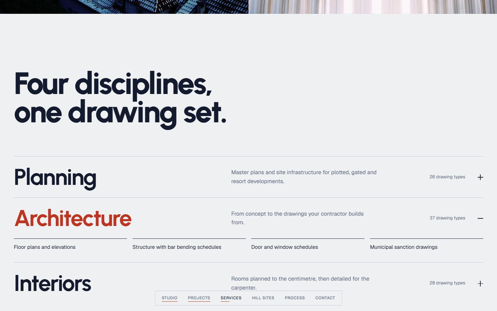
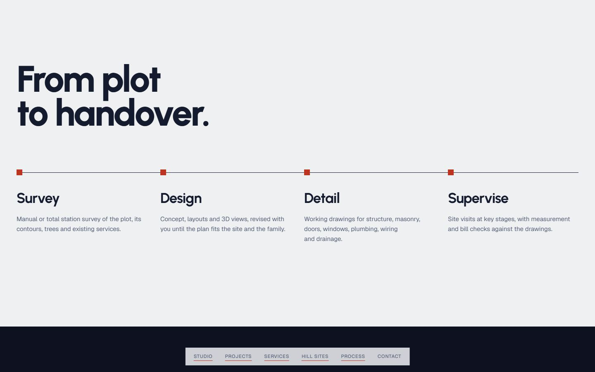
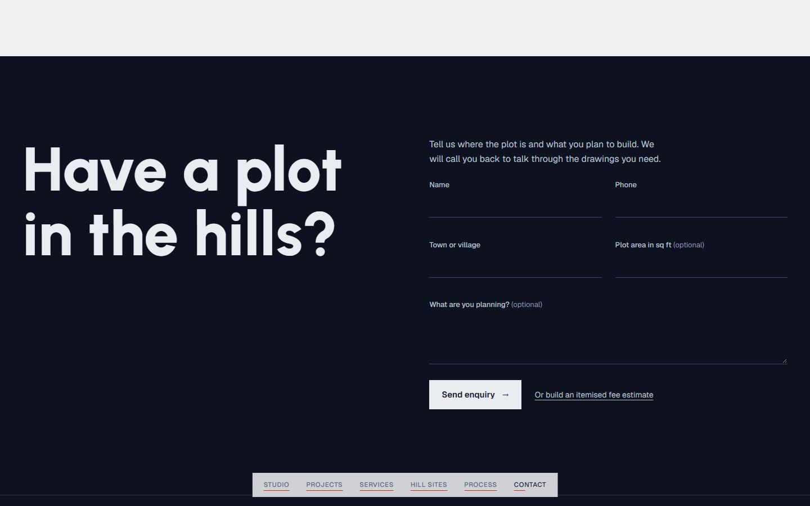
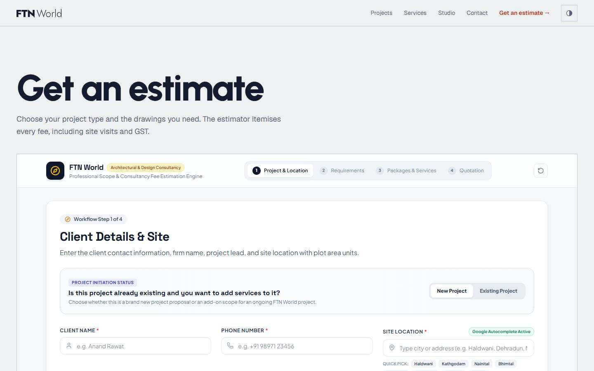
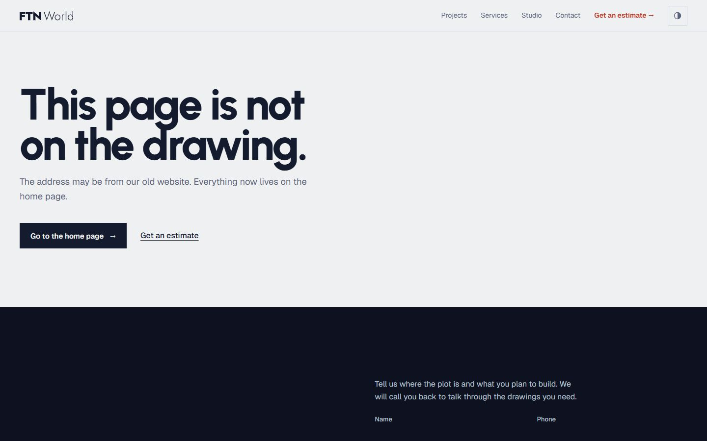
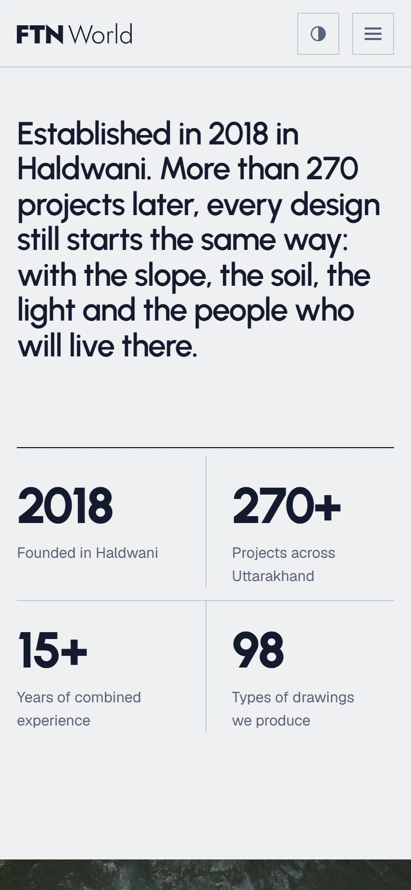
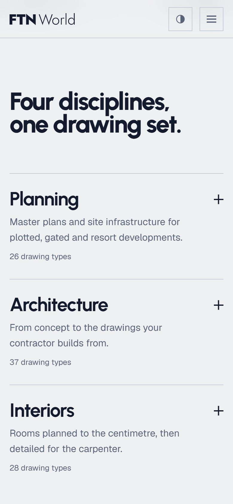
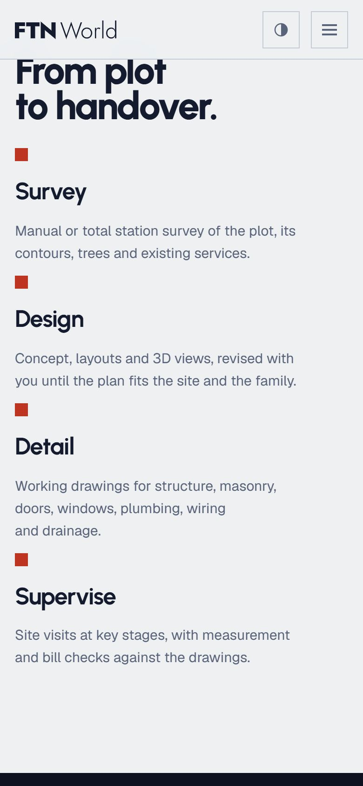
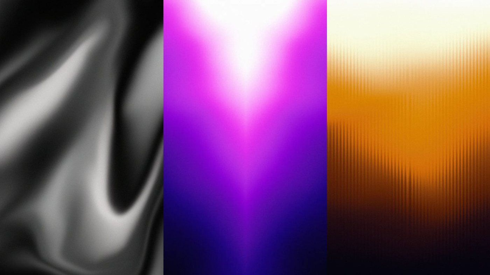

Survey the site
I crawled the whole old site and wrote it up: its pages, its story, and the catalogue behind its fee estimator. That gave 98 drawing types, 19 building types and a table of locations to design around.
A practice website for architects in the hills of Uttarakhand, drawn like a drawing set and built in five steps.

FTN World says it has designed more than 270 projects across Uttarakhand since 2018. Their first website showed none of them. The new one is built the way they build: survey, grid, structure, detail, planting.
Replace a theme-demo site with one that shows the work, explains four disciplines in plain words and takes enquiries for hill plots.
An architecture, interiors, landscape and planning practice with offices in Haldwani and Dehradun, building mostly on slopes.
Brand direction and the logo’s respacing, every screen in Figma, the front end, and the PHP and MySQL enquiry backend.
I read every page of the first website. This is what I found, and what the new one does instead.
No projects section at all
A projects chapter with a card for each, ready for real photographs and a short story per project.
No real mobile navigation
A menu on phones, a fixed chapter bar on desktop, and a layout designed at 390 px as carefully as at 1440.
Theme demo posts about food and London, still indexed
One page and two small ones: the estimate and a 404. Nothing left behind.
A low-resolution raster logo
A vector mark outlined from the typeface, so it never waits for a font and scales to any size.
Two estimators that disagreed
One estimate page, linked from the navigation and the footer.
Typos, and dates from 2014
Copy rewritten in plain sentences, in sentence case.
Survey the site
I crawled the whole old site and wrote it up: its pages, its story, and the catalogue behind its fee estimator. That gave 98 drawing types, 19 building types and a table of locations to design around.
Set out the grid
Before any page, a brand sheet. Type, colour, square corners and one red were settled, and the logo was respaced so F, T and N sit an equal distance apart.
Raise the structure
One long page in chapters: studio, projects, services, hill sites, process, contact. A chapter bar replaces the top bar once you are past the hero, so there is only ever one navigation on screen.
Detail the openings
Every part became a Figma component first: navigation cells, buttons, service rows open and closed, process steps, form fields in four states. Edits in Figma were read back into the code, so the two stayed the same drawing.
Plant the trees
Light and dark modes, spacing that scales with the screen, a pass from 320 to 1920 px, and a still page for anyone who asks for less motion. Then a public preview, with the backend kept out.
The colours come from a drafting table: a grey like tracing paper, ink for the lines, and one red, named Buransh after the rhododendron that is Uttarakhand’s state tree, for the one thing on each screen that matters.
The first logo had a 24 unit gap between F and T and a 74 unit gap between T and N. Both are now 49, so the letters read as one word. The mark is outlined to SVG, so it never waits for a font.
Eight colours. The red lightens to Buransh Lite on the night sheet so it keeps its contrast. Select a value to copy it.
AaInk on tracing
15.0 : 1, AAA
AaMist on night
15.9 : 1, AAA
AaBuransh on tracing
5.0 : 1, AA
AaLite on night
5.2 : 1, AA
Urbanist at 700 and 800 with tight spacing, like lettering on a title block. Geist for text and for the small spaced labels on the chapter bar.
Display600, 700, 800
Urbanist
Text and labels400, 500, 600
Geist
Built as Figma components first. The service row below opens the way it does on the site: one at a time.
The services chapter is built from the practice’s own catalogue, so the same list is here. Pick a discipline: each tick is one type of drawing, and the red ones are marked essential.
Six screens from the preview at 1440 px, and four at 390.










The front end is live as a preview. The photographs and sample projects on it are stand-ins, and the page says so. The enquiry backend is written for the practice’s hosting and waits to be connected.
I design and build websites for practices that care about being exact.

Next caseEvelyn Dew